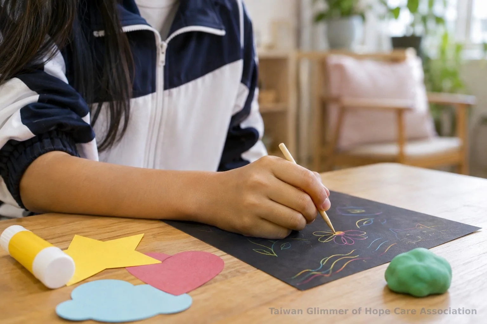
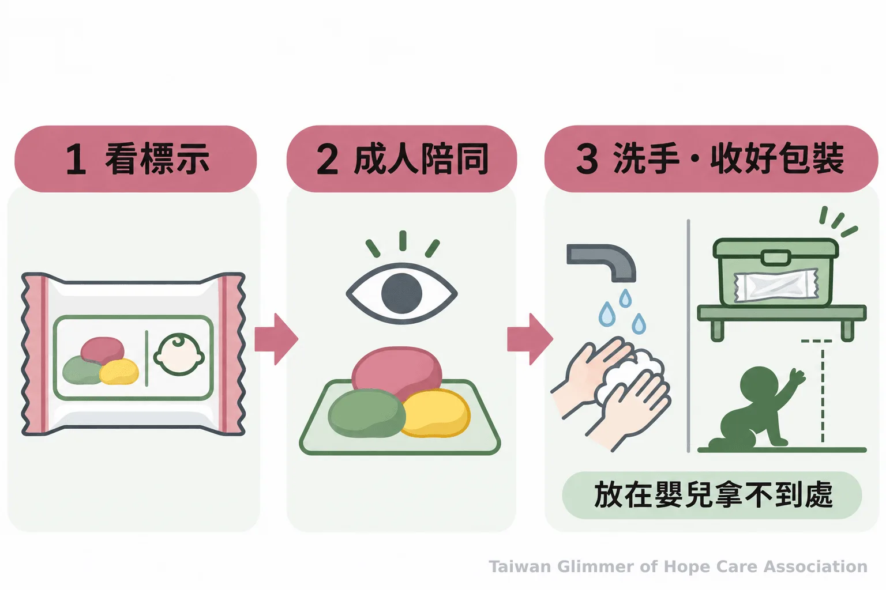
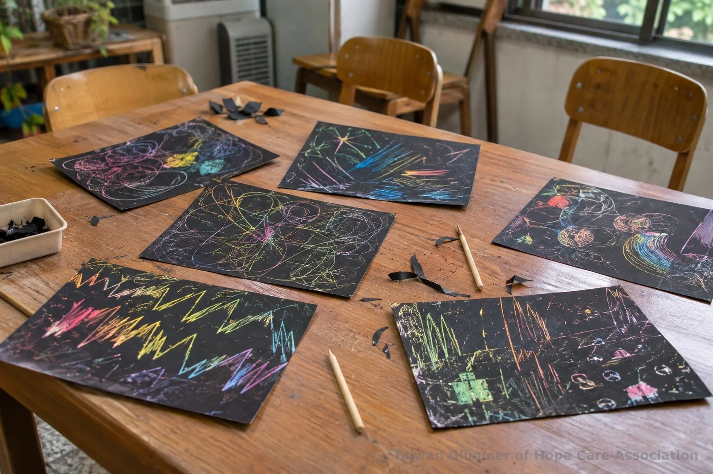

不愛畫畫也能做兒童美勞：刮、貼、捏的居家玩法
孩子不想拿畫筆，也能從刮畫、拼貼和黏土開始兒童美勞。整理低門檻玩法、材料安全提醒與大人陪伴方式，讓孩子保留選擇。
微光專欄｜在家也能做的藝術陪伴｜系列六之 3
孩子看到畫紙就說「我不會」或「我不想畫」，家長可以先把畫筆放在一旁。兒童美勞還有刮、貼、捏等不同入口：刮開色層、挑選紙片、揉捏黏土，都能讓孩子從一個小動作開始。大人準備材料與看顧安全，孩子決定要不要加入、做多久，以及作品要不要分享。
藝術陪伴重視的是共同參與和表達空間，不代表藝術治療，也不應把作品當成判斷孩子心理狀態或生活經驗的工具。若想先了解陪伴界線，可參考兒少藝術活動的安全規劃。
一、刮畫、拼貼、黏土可以怎麼開始？
可以從刮畫、拼貼或黏土選一種，先試一個簡單動作。
刮畫可以先在紙角試著刮一條線，觀察底下的顏色，再由孩子決定要不要加上圓形、波浪或其他記號，不要求畫出特定物件。
拼貼可以先提供幾種色紙或已剪好的圖形，邀請孩子排列、移動，再決定是否黏上去。紙片也能用手撕，減少剪刀操作。
黏土適合從揉、搓、壓、捏開始；不設主題也沒關係，手指留下的凹痕本身就能成為探索。

二、準備材料時要留意哪些安全細節？
先看產品標示的適用年齡、警語與使用方式，工具則依孩子的年齡和操作能力安排成人陪同。黏土尤其要避免嬰幼兒放入口中，使用後洗手並收好包裝。
經濟部標準檢驗局高雄分局的《「黏土玩具」選購及使用指南》提醒，選購時留意商品檢驗標識和中文標示，閱讀適用年齡、注意事項與使用方法；嬰幼兒不可把黏土玩具放入口中或啃咬，玩完要洗手。軟質塑膠包裝拆下後，應立即銷毀或放到嬰幼兒拿不到的地方。這些提醒針對黏土玩具，使用其他材料也要依各自包裝說明處理。
剪刀、黏著用品及小型裝飾物應依孩子能力挑選，成人陪同操作，並收起可能誤食的小物。
安全之外，也要保留孩子對作品的決定權。可以描述看見的形狀或顏色，少用「這一定表示你很生氣」替作品下結論。畫紙和黏土作品無法用來診斷心理狀態，也不能據此判定孩子是否受虐。遇到讓人擔心的安全情況，應交由正式求助資源協助，不自行查問孩子或調查家庭。

三、微光據點如何安排藝術陪伴？
台灣微光希望關懷協會在瑞芳愛鄰據點開辦兒童繪畫班，課程也曾安排刮畫。協會的藝術陪伴課不設標準答案，也不比較作品畫得好不好。
瑞芳愛鄰據點是微光的起點，2025 年 8 月，第一個兒童繪畫班在這裡開課；協會的活動紀錄中也有刮畫。台灣微光希望關懷協會理事長林秀霞說：
「孩子是需要被鼓勵、被肯定的。」
帶活動時，大人可以肯定孩子做出的選擇與嘗試，不以作品像不像範本評分。照片與紀錄，請見〈2026.03・孩子臉上有了笑容〉。

四、孩子不願參加時，大人可以怎麼做？
先接受孩子當下的拒絕，提供旁觀、稍後再試或收起材料的選項，不把完成作品當成參與條件。若有兒少安全疑慮，尋求正式管道協助。
邀請時可以把問題說得簡單，例如「你想試刮一條線，還是挑幾張紙？」如果孩子沒有回應，就先停下來。成人也可以示範一個步驟，再讓孩子決定是否接手。
疑似兒少遭受不當對待，可撥衛生福利部 113 保護專線諮詢或通報。衛福部說明，113 為 24 小時全年無休服務；若有立即人身安全危險，請先撥 110。社區陪伴與正式保護資源的分工，可延伸閱讀兒少保護怎麼做？讓社區陪伴接上求助制度。
- 不愛畫畫的孩子，可以從刮、貼、捏等不同動作開始，也可以選擇旁觀或暫停。
- 依標示和孩子能力挑選材料，留意黏土誤食、工具使用與包裝收納。
- 不替孩子解讀作品；有兒少安全疑慮可撥 113，立即危險先撥 110。
常見問題
可以，兒童美勞不必從畫筆開始。刮畫、拼貼和黏土提供不同操作方式，孩子是否參與、何時停止，都應保留選擇。
Q1：孩子不會畫畫，可以玩刮畫嗎？
可以從一條線或一個小記號開始，不需要先會畫圖。工具使用方式要符合孩子的年齡與能力，成人可先示範或協助。
Q2：拼貼可以從不用剪刀的方式開始嗎？
不一定。可事先準備剪好的紙片，也能讓孩子用手撕紙，再自行排列。是否黏貼由孩子決定。
Q3：黏土玩完後要注意什麼？
依商品標示清潔與收納，提醒孩子洗手，並把軟質塑膠包裝放到嬰幼兒拿不到的地方。嬰幼兒不可將黏土玩具放入口中或啃咬。
Q4：孩子不願意分享作品，需要問原因嗎？
不需要追問。可以問孩子要不要保留、帶走或收起作品，不從圖案和顏色推測他的心理狀態或生活經驗。
Q5：擔心孩子安全時可以找誰？
疑似兒少遭受不當對待，可撥 113 保護專線求助或通報；有立即人身安全危險時，先撥 110。
參考資料
- 經濟部標準檢驗局高雄分局。（未標示日期）。《「黏土玩具」選購及使用指南》。https://www.bsmi.gov.tw/wSite/public/Data/f1573526550148.pdf
- 衛生福利部保護服務司。（2017，更新於 2026）。〈113保護專線介紹〉。https://dep.mohw.gov.tw/DOPs/cp-1183-6499-105.html
- 衛生福利部保護服務司。（2014，更新於 2026）。〈兒少保護〉。https://www.mohw.gov.tw/fp-190-233-1.html
本文同步刊於 appi.news。